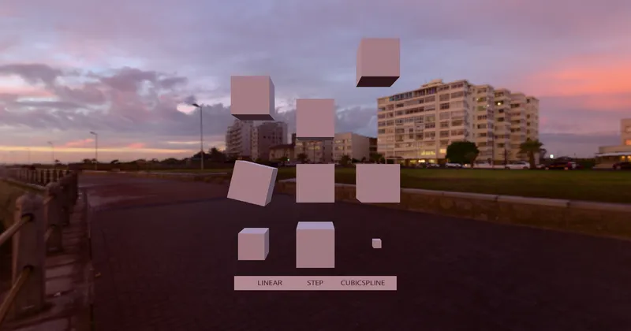

GLTF Animation
Interpolation Test - RedGPU WebGPU Example
Compares animation keyframe interpolation (Step, Linear, CubicSpline).
키프레임 보간 방식(Step, Linear, CubicSpline)을 비교합니다.

GLTF Animation
Compares animation keyframe interpolation (Step, Linear, CubicSpline).
키프레임 보간 방식(Step, Linear, CubicSpline)을 비교합니다.
